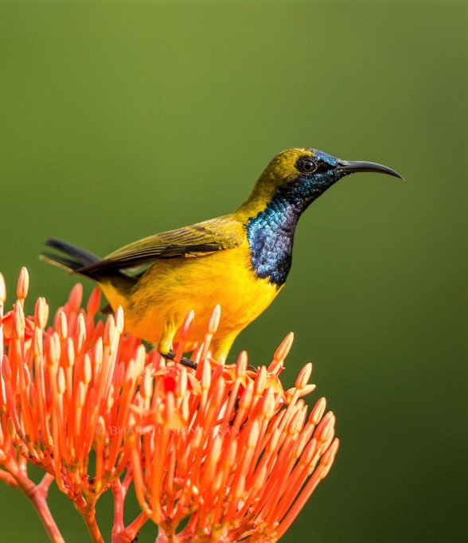

Birdwatching enthusiasts are spoiled for choice in Singapore’s 300 parks and four nature reserves, though local birders flock to a number of spots where the bird life is especially concentrated. In Central Singapore, Singapore Botanic Gardens, Bukit Timah Nature Reserve and MacRitchie Reservoir welcome those wishing to see tropical forest dwellers.
To the south are the Berlayer Creek-Bukit Chermin Boardwalk, Gardens by the Bay and the Southern Ridges where the flora attracts sunbirds, fantails, parrots and pigeons.
Up north, Kranji Marshes and Sungei Buloh Wetland Reserve are havens for migratory birds. In the west side is the sprawling Jurong Lake Gardens, which has a surprising variety of shorebirds, cuckoos, finches and bulbuls.
Finally, on the island’s east side, Lorong Halus Wetland, Pasir Ris Park and Pulau Ubin are hotspots for shorebirds and secondary forest inhabitants.